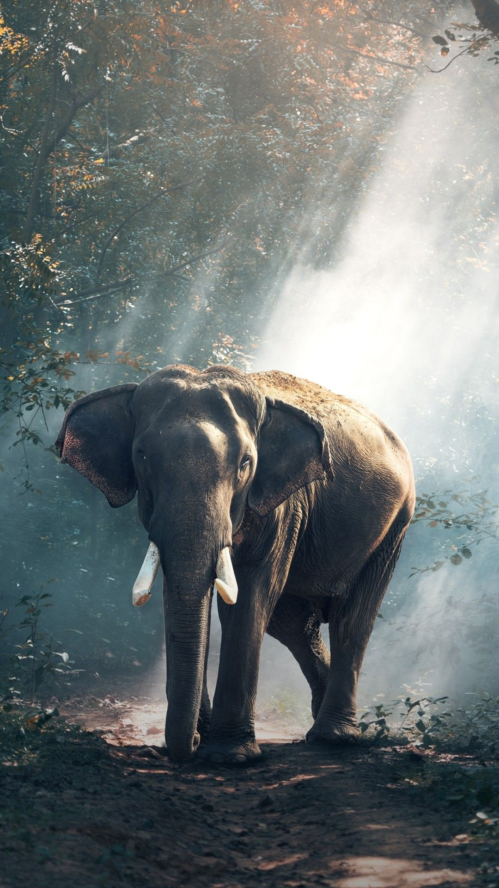
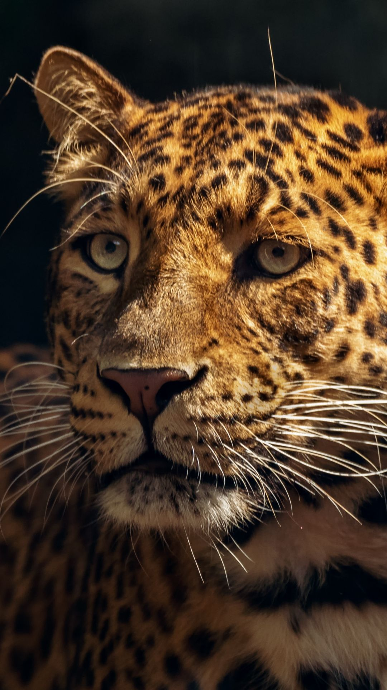
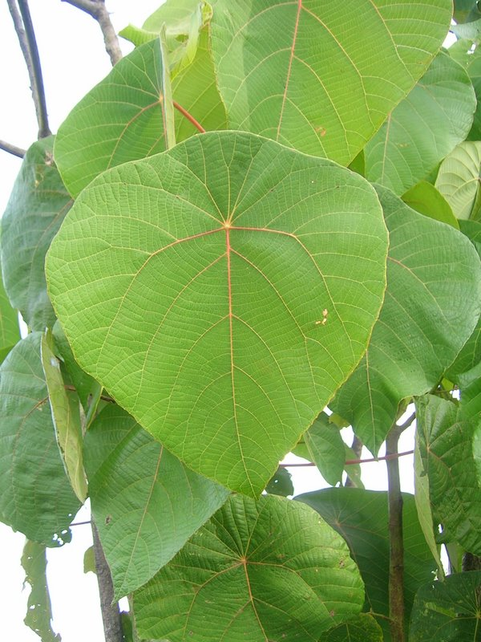

| Sri Lankan Elephant |
 |
- Massive Proportions: This subspecies has the biggest height and weight of all Asian elephants.
- Tusk Rarity: Sri Lankan elephants only rarely have tusks compared to other types of elephant.
- Small Range: These animals may be big, but their natural geographic range is not.
|
Like other elephant species, these animals have complex and integrated social behaviors that serve a critical role in their development and survival. Groups of related females and their calves, collectively called a clan, typically travel together and share in the responsibilities of caring for young. Male elephants leave their clan when they reach sexual maturity and live solitary lives or in small, loosely-bonded groups with other males. |
| Sri Lankan Leopard |
 |
- Strong limbs: Forequarters robust.
- Color and patterns distinct in various habitat types: Darker in forests; paler in arid, open habitat.
- Background color: Pale cream, buff-gray, shades of orange.
|
The Sri Lankan leopard is without doubt a star attraction for wildlife enthusiasts, both local and international. Panthera Pardus Kotiya is a subspecies of leopard that is native to Sri Lanka and is unfortunately classified as endangered by the International Union for Conservation of Nature (IUCN). The reasons for the decline in numbers include hunting for trade, fragmentation and of course habitat loss. |
| Sri Lankan Kenda Plant |
 |
- Size: Tree, up to 10 metres (33 ft) tall
- Leaf Size: Leaves 20 to 50 centimetres
- Look: circular or broadly ovate
|
Dioecious trees, to 15 m high; bark surface pale, greyish-brown mottled with white, smooth, lenticellate; brittle; blaze deep pink-red; exudation red, gummy; branchlets thick, terete, glaucous. Leaves simple, alternate, stipulate; stipules large, lateral, ovate-acuminate, reflexed, cauducous; petiole 12-35 mm long, stout, glabrous; lamina 11-25 x 9-20 cm, ovate-orbicular, deltoid-ovate, ovate or orbicular, base peltate, apex acute or acuminate, margin entire, glabrous or glabrescent, pubescent with reddish glands beneath, coriaceous; 8-10 ribs from base, palmate, prominent beneath; lateral nerves 7-8 pairs, parallel, regular, prominent, intercostae scalariform, much prominent; margin glandular. |